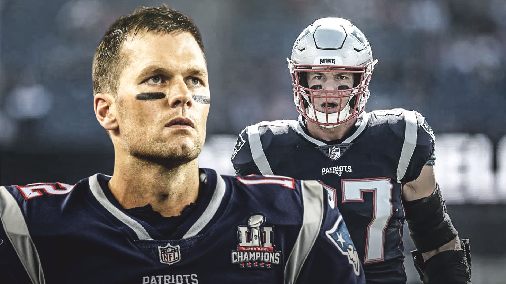

Técnico do Seattle Seahawks quer o fim do 'VAR' da NFL: 'Sinto falta do elemento humano'
“Acabe com isso, ou pelo menos diminua o uso do replay. Eu sei de todas as razões para termos o replay, e a tecnologia abriu um novo mundo para nós chegarmos até aqui. Mas eu sinto falta do elemento humano de confiar nos árbitros para fazer as chamadas no momento e o resto de nós termos que viver com aquilo que eles marcarem”, disse o treinador.

SOBREVIVENDO NOS PATRIOTS AO LADO DE TOM BRADY
Foi durante a primeira temporada de Paxton no New England Patriots, em 2000, que ele fez amizade com outro garoto do sul da Califórnia que teria sucesso na franquia: Tom Brady.
“Temos histórias semelhantes. Os dois são do sul da Califórnia, não fomos recrutados no topo (do draft), e pegamos o mesmo avião indo para o treinamento de calouros. Ficamos juntos e ainda somos amigos hoje em dia”, disse sobre o colega que reencontrou recentemente no Kentucky Derby (Lonie é o primeiro da esquerda para a direita).